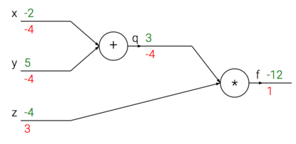
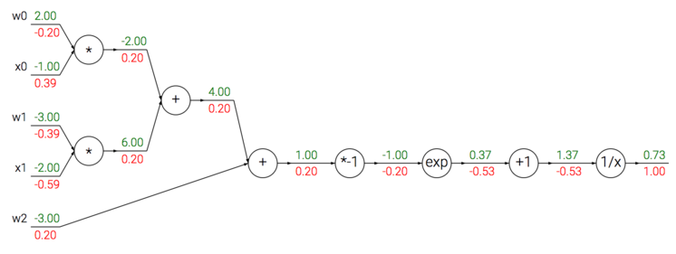
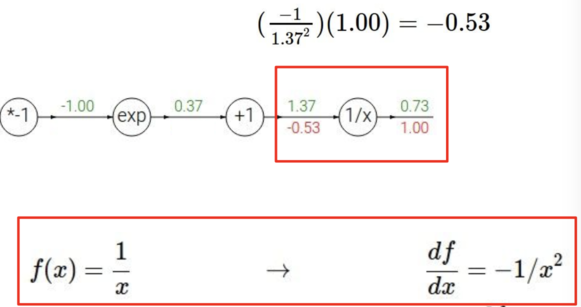
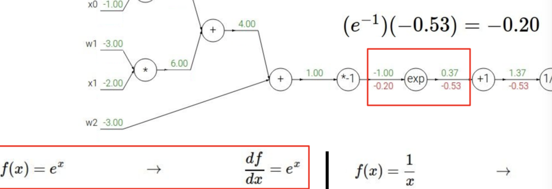
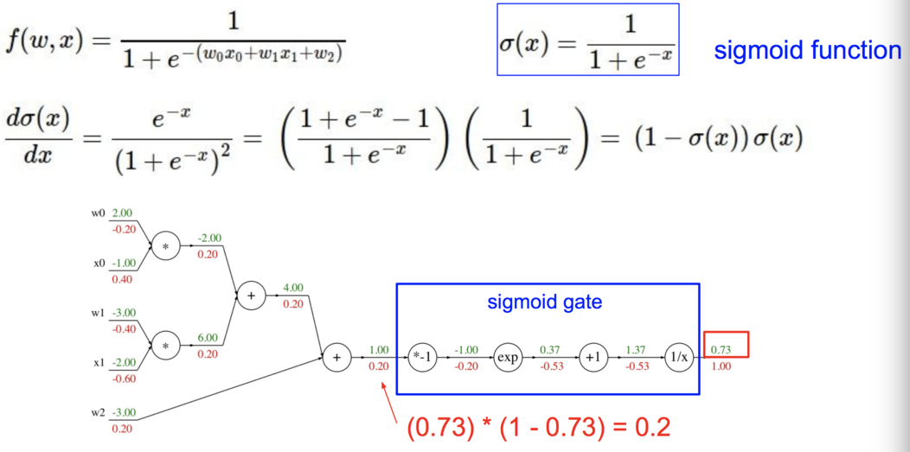

反向传播算法（Backpropagation）
Table of Contents
反向传播是利用链式法则递归计算表达式的梯度的方法。
简单的例子
使用链式法则计算复合表达式
# 设置输入值
x = -2; y = 5; z = -4
# 进行前向传播
q = x + y # q becomes 3
f = q * z # f becomes -12
# 进行反向传播:
# 首先回传到 f = q * z
dfdz = q # df/dz = q, 所以关于 z 的梯度是 3
dfdq = z # df/dq = z, 所以关于 q 的梯度是-4
# 现在回传到 q = x + y
dfdx = 1.0 * dfdq # dq/dx = 1. 这里的乘法是因为链式法则
dfdy = 1.0 * dfdq # dq/dy = 1

这个例子是比较简单的，但是复杂一点的不是很好理解了
Sigmoid 的例子
现在我们看一个表达式
\begin{align} f(w,x) = \frac{1}{1+e^{-(w_0x_0 + w_1x_1 + w_2)}} \end{align}这个函数是由多个门组成的。除了上文介绍的加法门，乘法门，取最大值门，还有下面这 4 种：
\begin{align} f(x) = \frac{1}{x} \hspace{1in} &\rightarrow \hspace{1in} \frac{df}{dx} = -1/x^2 \\\\ f_c(x) = c + x \hspace{1in} &\rightarrow \hspace{1in} \frac{df}{dx} = 1 \\\\ f(x) = e^x \hspace{1in} &\rightarrow \hspace{1in} \frac{df}{dx} = e^x \\\\ f_a(x) = ax \hspace{1in} &\rightarrow \hspace{1in} \frac{df}{dx} = a \end{align}下面是整个的计算

具体到每一步如下：


但是我们可以简化一下计算的流程
\begin{align} \sigma(x) = \frac{1}{1+e^{-x}} \\\\ \rightarrow \hspace{0.3in} \frac{d\sigma(x)}{dx} = \frac{e^{-x}}{(1+e^{-x})^2} = \left( \frac{1 + e^{-x} - 1}{1 + e^{-x}} \right) \left( \frac{1}{1+e^{-x}} \right) = \left( 1 - \sigma(x) \right) \sigma(x) \end{align}
相应的 Python 代码可以这样实现
w = [2,-3,-3] # 假设一些随机数据和权重
x = [-1, -2]
# 前向传播
dot = w[0]*x[0] + w[1]*x[1] + w[2]
f = 1.0 / (1 + math.exp(-dot)) # sigmoid 函数
# 对神经元反向传播
ddot = (1 - f) * f # 点积变量的梯度, 使用 sigmoid 函数求导
dx = [w[0] * ddot, w[1] * ddot] # 回传到 x
dw = [x[0] * ddot, x[1] * ddot, 1.0 * ddot] # 回传到 w
# 完成！得到输入的梯度
反向传播实践：分段计算
下面我们再看一个更加复杂的例子。
\begin{align} f(x,y) = \frac{x + \sigma(y)}{\sigma(x) + (x+y)^2} \end{align}下面是构建前向传播的代码模式：
x = 3 # example values
y = -4
# forward pass
sigy = 1.0 / (1 + math.exp(-y)) # sigmoid in numerator #(1)
num = x + sigy # numerator #(2)
sigx = 1.0 / (1 + math.exp(-x)) # sigmoid in denominator #(3)
xpy = x + y #(4)
xpysqr = xpy**2 #(5)
den = sigx + xpysqr # denominator #(6)
invden = 1.0 / den #(7)
f = num * invden # done! #(8)
有了前向传播，我们就可以根据这个来得到反向传播的代码。我们对前向传播时产生每个变量(sigy, num, sigx, xpy, xpysqr, den, invden)进行回传。我们会有同样数量的变量，但是都以 d 开头，用来存储对应变量的梯度。 注意在反向传播的每一小块中都将包含了表达式的局部梯度，然后根据使用链式法则乘以上游梯度。
# backprop f = num * invden
dnum = invden # gradient on numerator #(8)
dinvden = num #(8)
# backprop invden = 1.0 / den
dden = (-1.0 / (den**2)) * dinvden #(7)
# backprop den = sigx + xpysqr
dsigx = (1) * dden #(6)
dxpysqr = (1) * dden #(6)
# backprop xpysqr = xpy**2
dxpy = (2 * xpy) * dxpysqr #(5)
# backprop xpy = x + y
dx = (1) * dxpy #(4)
dy = (1) * dxpy #(4)
# backprop sigx = 1.0 / (1 + math.exp(-x))
dx += ((1 - sigx) * sigx) * dsigx # Notice += !! See notes below #(3)
# backprop num = x + sigy
dx += (1) * dnum #(2)
dsigy = (1) * dnum #(2)
# backprop sigy = 1.0 / (1 + math.exp(-y))
dy += ((1 - sigy) * sigy) * dsigy #(1)
# done! phew
上面有些地方要注意:
对前向传播变量进行缓存。
在计算反向传播时，前向传播过程中得到的一些中间变量非常有用。在实际操作中，最好代码实现对于这些中间变量的缓存，这样在反向传播的时候也能用上它们。
在不同分支的梯度要相加。
如果变量 x，y 在前向传播的表达式中出现多次，那么进行反向传播的时候就要非常小心，使用+=而不是=来累计这些变量的梯度（不然就会造成覆写）。这是遵循了在微积分中的多元链式法则，该法则指出如果变量在线路中分支走向不同的部分，那么梯度在回传的时候，就应该进行累加。
用向量化操作计算梯度
矩阵相乘的梯度：可能最有技巧的操作是矩阵相乘（也适用于矩阵和向量，向量和向量相乘）的乘法操作：
# 前向传播
W = np.random.randn(5, 10)
X = np.random.randn(10, 3)
D = W.dot(X)
# 假设我们得到了 D 的梯度
dD = np.random.randn(*D.shape) # 和 D 一样的尺寸
dW = dD.dot(X.T) #.T 就是对矩阵进行转置
dX = W.T.dot(dD)
提示：要分析维度！注意不需要去记忆 dW 和 dX 的表达，因为它们很容易通过维度推导出来。例如，权重的梯度 dW 的尺寸肯定和权重矩阵 W 的尺寸是一样的，而这又是由 X 和 dD 的矩阵乘法决定的（在上面的例子中 X 和 W 都是数字不是矩阵）。总有一个方式是能够让维度之间能够对的上的。例如，X 的尺寸是[10x3]，dD 的尺寸是[5x3]，如果你想要 dW 和 W 的尺寸是[5x10]，那就要 dD.dot(X.T)。
这部分课件中有详细的例子描述。
Erik Learned-Miller has also written up a longer related document on taking matrix/vector derivatives which you might find helpful. Find it here